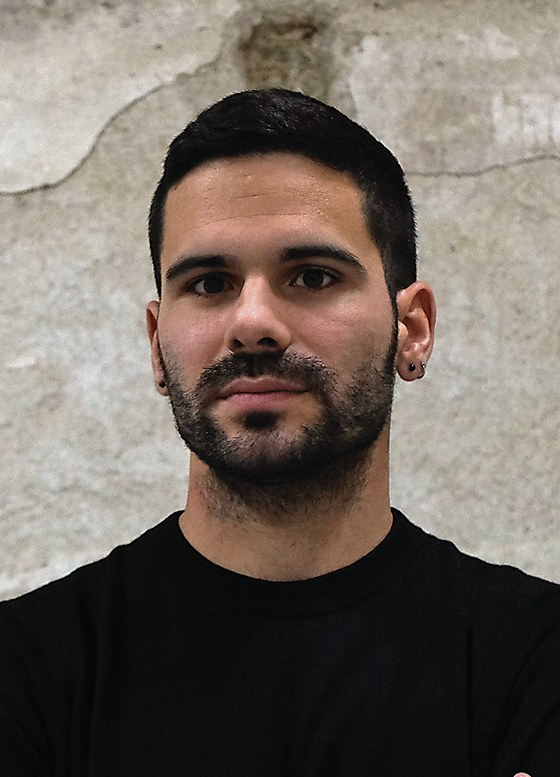

Inspiração

01.
Sempre que vejo o trabalho do United by Atelier dAlves, identifico-me com a forma direta e confiante como constroem a comunicação visual. Há uma simplicidade pensada que não parece forçada, mas sim resultado de muitas decisões bem resolvidas.Conheci este designer a partir de uma palestra na faculdade, e isso ajudou-me a perceber melhor o seu processo e a forma como pensam o design de maneira mais estratégica e consciente. Inspiro-me neste atelier porque quero chegar a esse ponto de clareza no meu próprio trabalho: conseguir comunicar mais com menos, sem perder força ou intenção. Dá-me vontade de simplificar o que faço e ser mais consciente nas minhas escolhas.